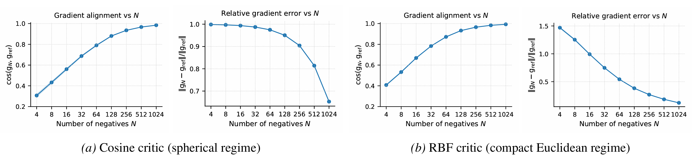

- What to show: monotone improvement with batch size.
- Takeaway: training dynamics are governed by the deterministic energy in the large-batch regime.
Numerical Validations
🔬 Mechanism checks: (i) large-batch SGD follows a deterministic InfoNCE energy; (ii) unimodal InfoNCE converges to a unique Gibbs equilibrium; (iii) multimodal InfoNCE exhibits a divergence-driven structural modality gap under heterogeneous conditionals.
| Prediction / Claim | Observable Signature | Where |
|---|---|---|
| Large-batch consistency | Stochastic gradient aligns with the deterministic energy gradient as batch size grows. | Figures below · App. D.1 |
| Unimodal strict convexity | Single stable equilibrium; low temperature yields concentration near the Gibbs minimizer. | Figures below · App. D.2 |
| Multimodal negative symmetric divergence | Persistent divergence term; exact marginal matching is knife-edge; stable gap under misalignment. | Figures below · App. D.3 |
1) Large-batch gradient consistency
We compare the stochastic InfoNCE gradient (finite batch) with the deterministic energy gradient predicted by our large-batch limit. As batch size increases, the gradients become increasingly aligned, and the relative error shrinks—supporting value & gradient consistency.

Cosine alignment & Relative gradient error between stochastic and deterministic gradients vs batch size.
2) Unimodal: unique Gibbs equilibrium & low-temperature concentration
In the unimodal regime, the intrinsic functional is strictly convex with a unique stable Gibbs equilibrium. Numerically, trajectories converge to the same terminal law across initializations; decreasing temperature produces sharper concentration inside the alignment basin rather than “uniformity for its own sake”.

Unimodal hypersphere distribution animation.
- What to show: A density visualization under various temperature settings.
- Takeaway: unimodal “uniformity” is an entropic tie-breaker constrained by the alignment potential.
3) Multimodal: divergence-driven structural modality gap
In the multimodal regime with heterogeneous conditionals, the symmetric objective contains a negative symmetric divergence that persists after kernel sharpening. Numerically, this manifests as a stable population-level separation between learned marginals (a “modality gap”) that grows with misalignment and does not vanish with longer training.

Animated joint-angle coupling (1 frame per 10 steps).
The diagonal concentration indicates improved pairwise coupling, while persistent off-diagonal mass reflects
mismatch-induced structure that does not disappear with longer training.
- What to look for: how the joint mass evolves over training; whether it concentrates on the diagonal; and whether residual spread persists under misalignment.
- Takeaway: the modality gap is a structural geometric consequence of symmetric multimodal training under mismatched conditionals.
For full setup details (models, temperatures, batch sizes, seeds), see Appendix D of the paper.